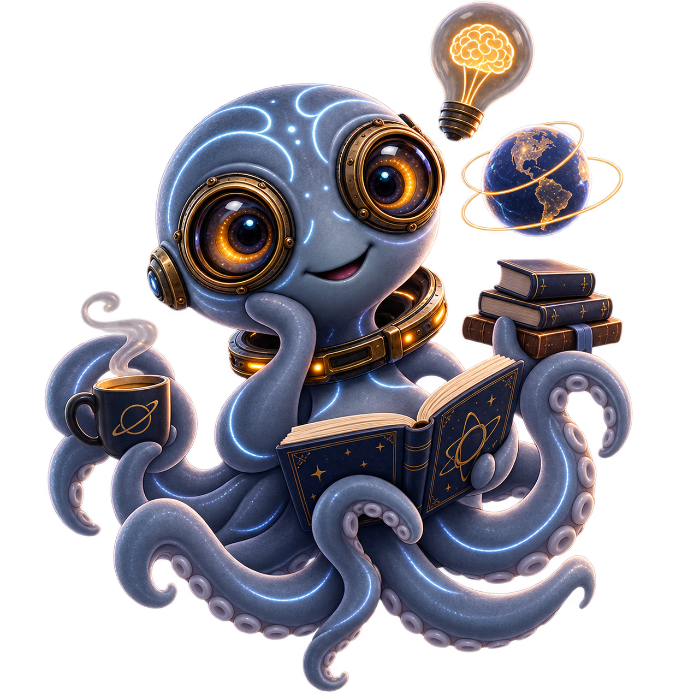

About CurOLO
Curiosity is the beginning of everything.
CurOLO was created for readers who want more than quick answers. It is a place for discovery, context, and wonder. Through history, science, culture, nature, technology, and the world's enduring mysteries, CurOLO turns curiosity into a richer reading experience.
We believe that understanding the world shouldn't feel like a chore. Every story we publish is designed to be both informative and beautiful — clear enough for anyone to grasp, but deep enough to reward careful reading. Whether you're exploring ancient civilizations, scientific breakthroughs, or unsolved mysteries, you'll find content that respects your intelligence and feeds your curiosity.
CurOLO exists because the world is too interesting to be reduced to headlines and soundbites. We're here to slow down, look closer, and share the remarkable stories that connect us to each other and to the universe around us.
Our Mission
To make knowledge engaging, beautiful, and accessible. We strip away unnecessary complexity while preserving the essential wonder of discovery. Every article is crafted to be read slowly, savored, and shared.
What We Explore
CurOLO spans the breadth of human knowledge and natural wonder. From the ancient civilizations that shaped our world to the scientific breakthroughs defining our future, from cultural traditions that bind communities to the natural environments that sustain life, from the technologies reshaping how we live to the mysteries that still elude our understanding.
Why CurOLO Exists
Because curiosity deserves more than distraction. Because understanding requires more than headlines. Because there's a profound satisfaction in learning something new — not to pass a test or impress colleagues, but simply because the world is fascinating and you want to know more about it.
For Curious Readers
CurOLO is for anyone who has ever wondered why things are the way they are. For readers who ask questions and aren't satisfied with simple answers. For people who believe that understanding the world is one of life's great pleasures, not a means to an end.

What We Cover
History
Stories from the past that shaped our world.
Science
Discoveries, theories, and the forces behind reality.
Culture
Art, beliefs, traditions, and the human experience.
Nature
Landscapes, life, and the beauty of the natural world.
Technology
Innovations that reshape how we live and think.
Mysteries
Unsolved questions, strange events, and the unknown.
Join us on a journey of endless discovery.
Explore articles spanning history, science, culture, nature, technology, and the world's most intriguing mysteries.
Explore Articles